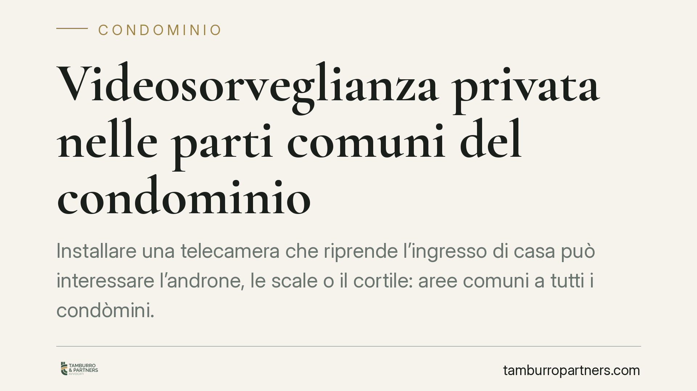

Videosorveglianza privata nelle parti comuni del condominio
Installare una telecamera che riprende l'ingresso di casa può interessare l'androne, le scale o il cortile: aree comuni a tutti i condòmini. Le regole cambiano a seconda che l'impianto sia deliberato dal condominio o installato dal singolo. Conoscere questa distinzione evita contestazioni tra vicini e violazioni della disciplina sulla protezione dei dati.

Due situazioni diverse, due norme diverse
Quando si parla di telecamere nelle parti comuni del condominio occorre distinguere subito due scenari, perché la disciplina applicabile non è la stessa.
Il primo è l'impianto deliberato dal condominio: la videosorveglianza a copertura delle parti comuni decisa dall'assemblea. Il secondo è la telecamera installata dal singolo condòmino per tutelare la propria unità immobiliare, che però finisce per inquadrare, in tutto o in parte, spazi condivisi.
La prima ipotesi è regolata dall'art. 1122-ter c.c.; la seconda dall'art. 1102 c.c. Tenere separati i due piani è il punto di partenza per capire cosa è lecito e cosa no.
L'impianto condominiale: art. 1122-ter c.c.
L'art. 1122-ter c.c. consente all'assemblea di deliberare l'installazione di impianti di videosorveglianza sulle parti comuni. La norma richiede una maggioranza qualificata: quella prevista dall'art. 1136, secondo comma, c.c., cioè il voto favorevole della maggioranza degli intervenuti che rappresenti almeno la metà del valore dell'edificio (500 millesimi).
Si tratta quindi di una decisione collettiva, che vincola l'intero condominio e deve essere assunta con un quorum non simbolico. L'impianto, per definizione, ha la funzione di sorvegliare gli spazi comuni: androni, cortili, garage, aree di passaggio.
La telecamera del singolo: art. 1102 c.c.
Diverso il caso del condòmino che, di propria iniziativa, colloca una telecamera per proteggere il proprio ingresso o la propria porta. Qui non serve alcuna delibera assembleare, perché non si tratta di un impianto condominiale.
Opera invece l'art. 1102 c.c., che disciplina l'uso della cosa comune da parte del singolo: ciascun partecipante può servirsi del bene comune purché non ne alteri la destinazione e non impedisca agli altri di farne pari uso.
Secondo l'orientamento della Corte di Cassazione in materia, il criterio decisivo non è tanto il punto in cui la telecamera è fisicamente collocata, quanto l'angolo di ripresa. È lecita la telecamera che, pur installata su una parete comune, inquadra sostanzialmente il solo ingresso del proprietario e non trasforma la sorveglianza in un controllo generalizzato degli spazi condivisi e dei movimenti degli altri condòmini.
È la porzione realmente ripresa, dunque, a stabilire se l'uso della cosa comune resta entro i limiti dell'art. 1102 c.c.
Il piano della protezione dei dati
Alle regole civilistiche si aggiunge la disciplina sulla protezione dei dati personali. Le riprese che catturano l'immagine di persone identificabili costituiscono trattamento di dati e rientrano nell'ambito del Regolamento (UE) 2016/679 (GDPR).
Il trattamento effettuato da una persona fisica per fini esclusivamente personali o domestici può beneficiare della cosiddetta esenzione domestica; tale esenzione, però, tende a venir meno quando le riprese si estendono in modo significativo ad aree comuni o a spazi non riconducibili alla sola sfera privata di chi installa la telecamera.
In tema di videosorveglianza il Garante per la protezione dei dati personali ha adottato provvedimenti e indicazioni operative (la cui versione aggiornata va verificata caso per caso): riguardano, tra l'altro, la limitazione dell'angolo di ripresa allo stretto necessario, l'apposizione di adeguata cartellonistica informativa e i tempi di conservazione delle immagini.
Cosa fare in concreto
Per il condòmino che vuole installare una telecamera privata:
- Orienta la telecamera esclusivamente sul tuo ingresso o sulla tua porta, riducendo al minimo l'inquadratura delle parti comuni.
- Espone la segnaletica informativa prevista in materia di videosorveglianza.
- Configura tempi di conservazione limitati delle immagini registrate.
Per l'amministratore e l'assemblea:
- Porta l'installazione dell'impianto comune in assemblea e verbalizza la delibera con la maggioranza dell'art. 1136, secondo comma, c.c.
- Documenta finalità, aree riprese e modalità di conservazione, in coerenza con il GDPR e con le indicazioni del Garante.
In presenza di contestazioni tra condòmini o di dubbi sull'ampiezza delle riprese, è opportuno un controllo tecnico della configurazione dell'impianto e una verifica della conformità alla normativa vigente.
---
*Contributo informativo a cura di Tamburro & Partners - Avv. Giuseppe Tamburro. Non costituisce parere legale.*
Ogni condominio ha una storia a sé.
Se gestisci un'amministrazione e vuoi un confronto su una specifica questione condominiale, scrivi allo studio. Ti rispondiamo entro un giorno lavorativo.